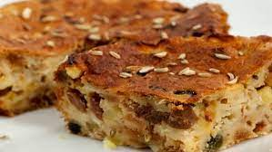

Pinza

Pinza (or pinsa, if you wanna spell it like a local), it's a dessert that essentially bids
farewell to Winter's Festivities. But don't be sad yourself: indulge in a slice of this
Venetian polenta flour cake filled with dried fruit and flavoured with grappa, fennel and orange
zest and you'll see that it takes more than the 6th of January to take away the holiday vibes!
Once again, don't be fooled by the appearances: a cake rustic in nature, pinsa it's fairly
easy to prepare. Just get ready to mash some dry fruit and dough together ;)
- Water: 750mL
- Fennel seeds: 2 tablespoons
- The zest of 2-3 oranges
- Apples, peeled and grated: 2
- Dried figs, chopped: 200gr
- Dates, pitted and chopped: 10
- ½ cup of grappa
- Lard (or butter): 25gr
- Polenta flour (or corn meal): 250gr
- A generous pinch of coarse salt
- All-purpose flour: 500gr
- Raisins, softened in water: 500-600gr
- Active-dry yeast, dissolved in ¼ cup of lukewarm water: 14gr
- Sugar: 300gr
- Pour water in a deep pot. Place over stove and turn on heat.
- Add fennel seeds, orange zest, grated apples, figs, dates, grappa, lard, salt.
Bring to a boil and let boil for about 10 minutes. Turn heat to low.
- Add polenta flour in a steady and slow stream. Cook for about 20 minutes, mixing often.
- Remove from the heat and pour in a bigger pot. Let it cool.
- Add sugar and yeast. Squeeze water out of raisins and then add to mixture.
- Mix all ingredients with your hands and then add all-purpose flour.
- Continue mixing with your hands until all ingredients are well-combined.
- Cover pot with a towel and let rest for about 2-3 hours.
- Line a baking tray with parchment paper. Spoon mixture onto baking tray.
With wet hands, level the mixture and spread it across the pan.
Let it rest for another hour.
- Bake at 360°F (180°F) for 50-60 min or until golden brown.
NOTE: for this recipe we used a half-sheet baking pan.